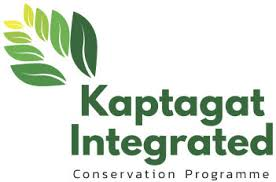

"Sustaining fiscal discipline and restoring our environment are the twin anchors of our nation’s future."
"Our economic policy is a commitment to the next generation, prioritizing long-term stability over short-term gain."
"Integrity and innovation in the National Treasury drive the pulse of Kenya’s development."
"Our fiscal strategy empowers counties, mobilizes local revenue, and builds a sustainable future for every Kenyan."
"Restoring Kaptagat Forest and our national water towers is an ecological legacy we must secure today."


Executive Stewardship
Dr. Chris Kiptoo, CBS, is the Principal Secretary of the National Treasury. With over two decades of distinguished service in the public and private sectors, he has been a pivotal architect of Kenya's economic resilience and environmental restoration strategies.
His leadership spans across critical departments including Trade, Environment, and Forestry, where he pioneered the Kaptagat Integrated Conservation Programme. Dr. Kiptoo holds a PhD in Economics and has consistently championed data-driven policy making to ensure the fiscal health and sustainable growth of the Republic of Kenya.
Key Ministerial Portfolios
National Treasury
Directing Kenya’s macro-economic policies, fiscal management, and revenue mobilization for sustainable national development.
Explore Portfolio chevron_right
Trade & Industrialization
Spearheading trade negotiations, expanding market access, and fostering a competitive environment for private sector growth.
Explore Portfolio chevron_rightEnvironment & Forestry
Leading national climate action initiatives, reforestation programs, and the conservation of vital water towers.
Explore Portfolio chevron_rightPS Kiptoo on Treasury's Journey
Dr. Chris Kiptoo speaks candidly on fiscal discipline, public debt management, and the National Treasury's strategic direction for Kenya's economic future.

Kaptagat Integrated Conservation Programme (KICP)
A flagship initiative founded by Dr. Kiptoo to restore the Cherang'any and Elgeyo Hills ecosystems. Through community partnership and institutional oversight, we are reclaiming our water towers for a climate-resilient future.
Learn More arrow_forwardThe KICP Story
Initiated as a local response to environmental degradation in the Kaptagat water tower, KICP has grown from community tree planting days into an internationally recognized integrated conservation model. Reconciling community livelihood programs with active forest protection, the programme bridges where we started—a fragile water tower in need of immediate rehabilitation—and where we are going: a climate-resilient ecosystem protected for generations to come.